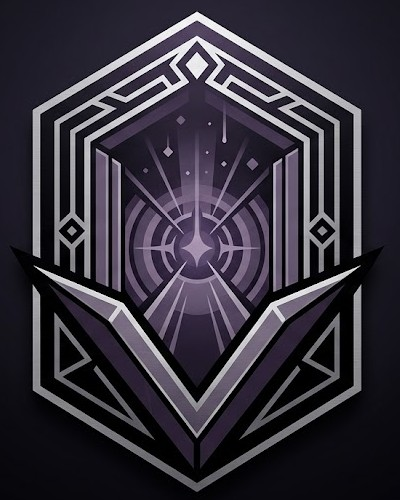
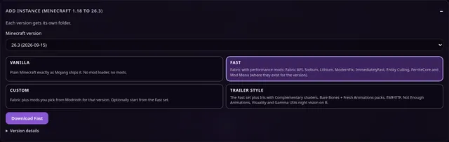
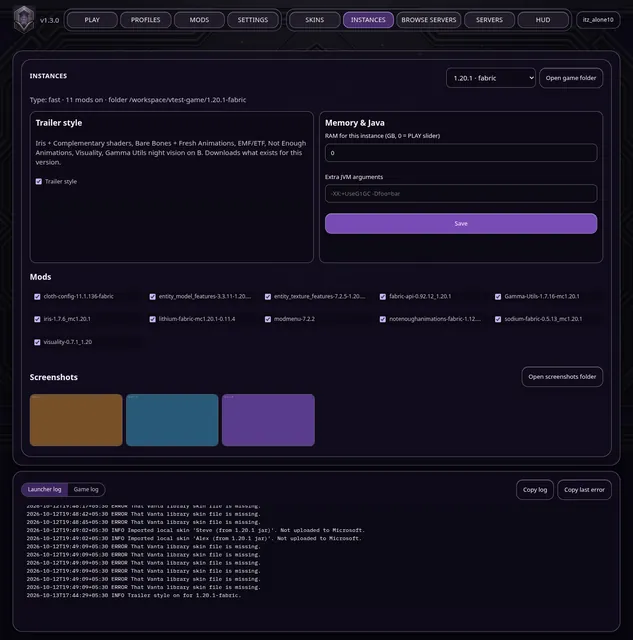
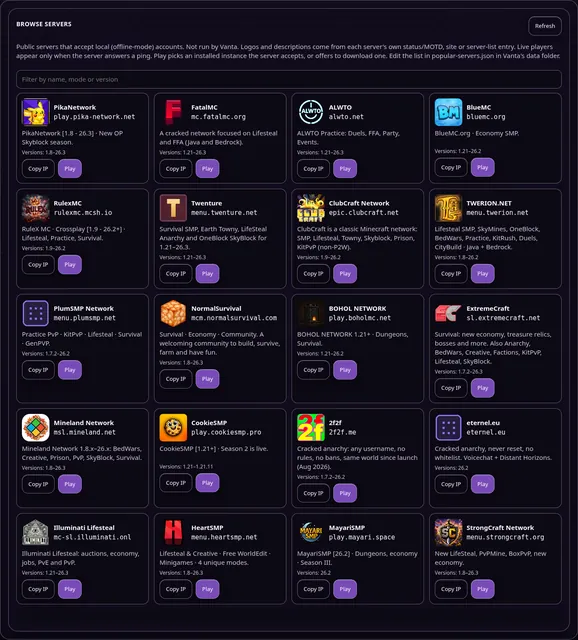
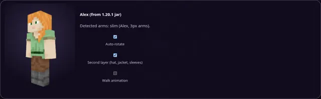
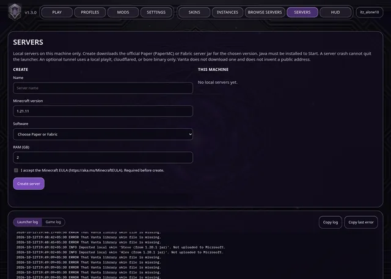
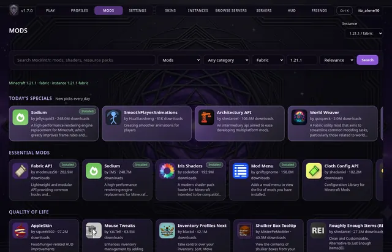
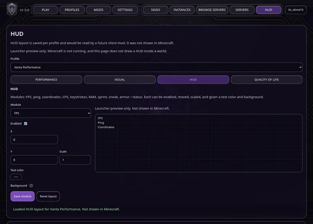
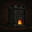

PLAY tab
Local account, version picker, RAM slider, a popular-servers bar and a big PLAY button. A green light shows while Minecraft is running, with a Stop button and a live game log.

VANTAMinecraft Java launcher · v1.3.0
Vanta is a free launcher for Windows and macOS. Local accounts, every release from 1.18 to 26.3, one-click Fast or Trailer-style mod sets, a server browser and 3D skins.
Windows 10/11 and macOS (Apple Silicon & Intel). Free; source code on GitHub.
Everything below is in Vanta v1.3.0. Click a screenshot to enlarge it.
Local account, version picker, RAM slider, a popular-servers bar and a big PLAY button. A green light shows while Minecraft is running, with a Stop button and a live game log.

Add instance downloads any real release into its own folder, with a progress bar. PLAY picks Java 17, 21 or 25 to match, and says clearly if none fits.

For each instance: RAM and extra Java flags, mod on/off switches, Trailer style on/off, a screenshots gallery and an Open game folder button.

20 public servers that accept local accounts, each with its own logo, versions and description. Live player counts appear when a server answers. Play joins straight in using an instance the server accepts.

A rotating 3D player (skinview3d, bundled). Drag to spin, see the second layer, and slim/classic arms are detected.

Create a Paper or Fabric server in a few clicks. Vanta downloads the official jar, checks its hash, and gives you start, stop and a console, plus optional playit.gg tunnels.

Search and add Fabric mods for your profile, and turn them on or off. Official Modrinth files, hash-checked.

HUD modules, visual presets and quality-of-life toggles, plus controller mapping.
If Minecraft crashes, Vanta explains the likely cause in plain words (out of memory, a missing mod dependency, the wrong Java version, a graphics driver problem, a mod conflict) and links the crash report.
Vanta checks GitHub Releases. Update replaces only the changed launcher files, each checked against GitHub's hash. Accounts, worlds and game mods are never touched.
Pick a username and play. No Microsoft sign-in needed for offline-mode, LAN and friend servers.
Open to LAN gives you a public join address. With Online Mode off, friends on local accounts can join.
Gamma Utils' night-vision fullbright stays bright even with shaders on.
Ctrl+1–9 switch tabs, Ctrl+Enter starts PLAY, / searches servers, ? shows the shortcuts.
In PLAY › Add instance, pick a version and one of four types. Mods are downloaded from Modrinth for that exact version; anything without a build is skipped, and Vanta lists what was skipped.
Download type
Plain Minecraft exactly as Mojang ships it.
Download type
Fabric with performance mods.
Download type
Fabric plus the mods you choose.
Download type
The Fast set plus the cinematic look.
Trailer style can also be turned on or off later for any Fabric instance in the INSTANCES tab.
Vanta-Windows-App.zip · 572 MB · includes Minecraft 1.21.11 + Fabric, ready to play
SHA-256365e925d8b678c19b9da65b9350ebae8a017d20e17364e8694f5be32d35c35c5
Vanta-macOS.zip · 40 MB · first run downloads Minecraft 1.21.11 + Fabric (several hundred MB)
SHA-2569ae68a02a0526b13763f014c2e11296b9ad5743c503cede354f34790288d9c57
Verify a download: Windows Get-FileHash Vanta-Windows-App.zip · macOS shasum -a 256 Vanta-macOS.zip
These 20 public servers are built into BROWSE SERVERS. They're not run by Vanta; logos and descriptions come from each server's own status, website or listing. Copy an address, or press Play in Vanta to join directly.
play.pika-network.netPikaNetwork [1.8 - 26.3] · New OP Skyblock season.
Versions: 1.8–26.3
mc.fatalmc.orgA cracked network focused on Lifesteal and FFA (Java and Bedrock). Season 5 out now.
Versions: 1.21–26.3
alwto.netALWTO Practice: Duels, FFA, Party, Events. 26.3 update (spears).
Versions: 1.21–26.3
bluemc.orgBlueMC.org · Economy SMP.
Versions: 1.21–26.2
rulexmc.mcsh.ioRuleX MC · Crossplay [1.9 - 26.2+] · Lifesteal, Practice, Survival.
Versions: 1.9–26.2
menu.twenture.netSurvival SMP, Earth Towny, LifeSteal Anarchy and OneBlock SkyBlock for 1.21–26.3.
Versions: 1.21–26.3
epic.clubcraft.netClubCraft is a classic Minecraft network: SMP, Lifesteal, Towny, Skyblock, Prison, KitPvP (non-P2W).
Versions: 1.9–26.2
menu.twerion.netLifesteal SMP, SkyMines, OneBlock, BedWars, Practice, KitRush, Duels, CityBuild · Java + Bedrock.
Versions: 1.8–26.2
menu.plumsmp.netPractice PvP · KitPvP · Lifesteal · Survival · GenPVP.
Versions: 1.7.2–26.2
mcm.normalsurvival.comSurvival · Economy · Community. A welcoming community to build, survive, farm and have fun.
Versions: 1.8–26.3

play.boholmc.netBOHOL NETWORK 1.21+ · Dungeons, Survival.
Versions: 1.21–26.2
sl.extremecraft.netSurvival: new economy, treasure relics, bosses and more. Also Anarchy, BedWars, Creative, Factions, KitPvP, Lifesteal, SkyBlock.
Versions: 1.7.2–26.3
msl.mineland.netMineland Network 1.8.x–26.x: BedWars, Creative, Prison, PvP, SkyBlock, Survival.
Versions: 1.8–26.3
play.cookiesmp.proCookieSMP [1.21+] · Season 2 is live.
Versions: 1.21–1.21.11
2f2f.meCracked anarchy: any username, no rules, no bans, same world since launch (Aug 2026).
Versions: 1.7.2–26.2
eternel.euCracked anarchy, never reset, no whitelist. Voicechat + Distant Horizons.
Versions: 26.2
mc-sl.illuminati.onlIlluminati Lifesteal: auctions, economy, jobs, PvE and PvP.
Versions: 1.21–26.3
menu.heartsmp.netLifesteal & Creative · Free WorldEdit · Minigames · 4 unique modes.
Versions: 1.8–26.3
play.mayari.spaceMayariSMP [26.2] · Dungeons, economy · Season III.
Versions: 26.2
menu.strongcraft.orgNew LifeSteal, PvPMine, BoxPvP, new economy.
Versions: 1.8–26.3
Server rules and availability are up to each server. Join at your own discretion.
Release notes from GitHub Releases. A saved copy is shown if GitHub can't be reached.
Click the Download button above. It picks Windows or macOS for you.
Windows: right-click the zip → Extract All. Don't run Vanta from inside the zip. macOS: double-click the zip.
Windows: double-click Vanta.exe (SmartScreen: More info → Run anyway). macOS: right-click Vanta.app → Open.
Type a username and click Create local account. No Microsoft sign-in.
PLAY › Add instance: choose a version and Vanilla, Fast, Custom or Trailer style.
Or open BROWSE SERVERS and press Play on a server to join it directly.
That's SmartScreen. Vanta isn't code-signed yet. Click More info → Run anyway. Some antivirus tools may also flag unsigned launchers.
The app is unsigned. Right-click (or Control-click) Vanta.app → Open → Open the first time. If it still refuses: System Settings → Privacy & Security → Open Anyway.
Minecraft 1.21.11 needs Java 21+, 1.18–1.20.4 need Java 17+, and 26.x needs Java 25. Install from Eclipse Temurin. On Windows tick “Add to PATH”, then restart Vanta. Vanta picks the right installed Java per version.
Vanta shows a crash card on PLAY with the likely cause. Out of memory: raise RAM in INSTANCES. A mod error: turn off the last mod you added. The Game log button shows the full log, and Open crash reports opens the folder.
When a new release exists, an Update button appears in Vanta's top bar. It replaces only changed launcher files (hash-checked) and never touches accounts, worlds or mods. Restart Vanta afterwards. Or download the new zip here.
Press B (Gamma Utils night vision; it works with shaders). Left/Right arrows change the strength. Change the key in Options → Controls → Key Binds → “Gamma Utils – Night Vision”.
Press K (Iris). Switch between Complementary Reimagined and Unbound in Options → Video Settings → Shader Packs. In Vanta's INSTANCES tab you can turn the whole Trailer style off.
In your world press Esc → Open to LAN, set Online Mode: OFF, start it. e4all prints a public address in chat; friends add it under Multiplayer → Direct Connection.
“Use” is set to Toggle. Options → Controls → Use: Hold (toggleUse:false). Vanta sets Hold for new instances.
No. Local accounts work on offline-mode, LAN and friend servers only. Online-mode servers need a paid Microsoft account. BROWSE SERVERS lists servers that accept local accounts.
INSTANCES → Open game folder. Each version has its own folder with saves, screenshots, mods, resourcepacks and shaderpacks.
Vanta talks only to Mojang, Fabric, Modrinth, GitHub (updates) and the servers you ping or join. No accounts or passwords are uploaded, and this website has no trackers.
No answers match. Try other words, or open an issue below.
Open an issue on GitHub. Say what happened, and attach the Game log (Copy log in Vanta) or client.log from Vanta's data folder. Never post account files or passwords.
Vanta is a fan-made launcher by ADDU. Its source code, issues and releases are on GitHub.
This site uses no cookies, analytics or trackers. The only outside requests are to GitHub's public API for release notes and download counts.
Not an official Minecraft product. Not approved by or associated with Mojang or Microsoft.
All belong to their authors and are downloaded from Modrinth. Licenses as listed on Modrinth.